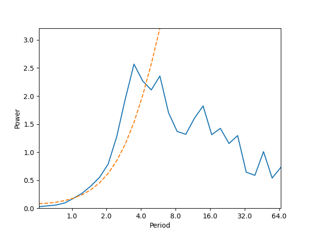
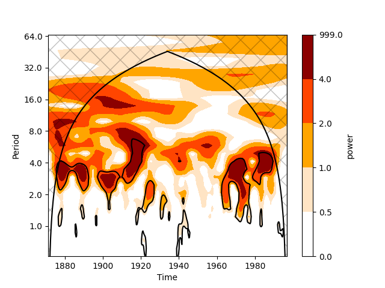

Note
Go to the end to download the full example code.
Wavelets#
Wavelet Analysis is a mathematical tool that decomposes signals or data into different frequency components, allowing localized analysis in both time and frequency domains. Unlike Fourier analysis, which provides only global frequency information, wavelets use scalable and shiftable basis functions (“wavelets”) to capture transient features, trends, and discontinuities at multiple resolutions.
Extreme Event Detection: Identifies localized phenomena (e.g., hurricanes, heavy rainfall) by isolating abrupt changes in atmospheric data.
Climate Variability Studies: Analyzes multi-scale oscillations (e.g., El Niño, Madden-Julian Oscillation) and their time-frequency characteristics.
Turbulence & Boundary Layer Processes: Resolves eddy structures and energy cascades in high-resolution wind/temperature data.
Data Denoising: Separates meaningful signals from noise in observational datasets (e.g., satellite measurements).
Spatio-Temporal Patterns: Examines non-stationary relationships, such as teleconnections between distant climate variables.
Wavelets are particularly valuable for non-stationary meteorological data, where traditional spectral methods fall short.
See also
Torrence, C., & Compo, G. P. (1998). A Practical Guide to Wavelet Analysis. Bulletin of the American Meteorological Society, 79(1), 61-78. https://journals.ametsoc.org/view/journals/bams/79/1/1520-0477_1998_079_0061_apgtwa_2_0_co_2.xml
Torrence, C., & Webster, P. J. (1999). Interdecadal Changes in the ENSO–Monsoon System. Journal of Climate, 12(8), 2679-2690. https://journals.ametsoc.org/view/journals/clim/12/8/1520-0442_1999_012_2679_icitem_2.0.co_2.xml
Grinsted, A., Moore, J. C., and Jevrejeva, S.: Application of the cross wavelet transform and wavelet coherence to geophysical time series, Nonlin. Processes Geophys., 11, 561–566, https://doi.org/10.5194/npg-11-561-2004, 2004.
Before proceeding with all the steps, first import some necessary libraries and packages
import xarray as xr
import matplotlib.pyplot as plt
import easyclimate as ecl
Import the required nino3 data and perform wavelet analysis
Tip
You can download following datasets here: Download test_input_nino3_wavelet.nc
data_nino3 = ecl.open_tutorial_dataset("test_input_nino3_wavelet")['nino3']
result_data = ecl.filter.calc_timeseries_wavelet_transform(data_nino3, dt = 0.25)
result_data
test_input_nino3_wavelet.nc ━━━━━━━━━━ 100.0% • 15.8/15.8 • 8.2 MB/s • 0:00:00
kB
Allen and Smith AR(1) model estimate of the lag-one autocorrelation: lag1 = 0.7673996830077151
Plotting the global wavelet spectrum
And plotting the wavelet transform
Total running time of the script: (0 minutes 1.207 seconds)